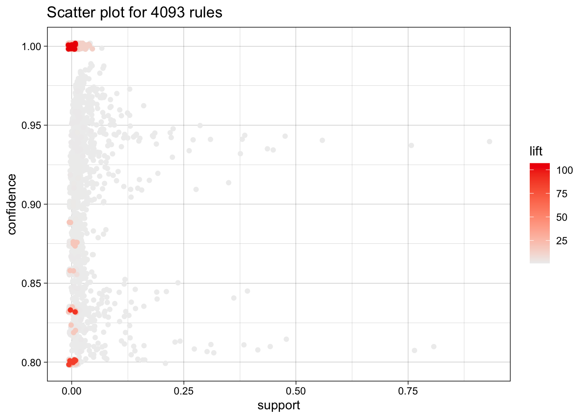
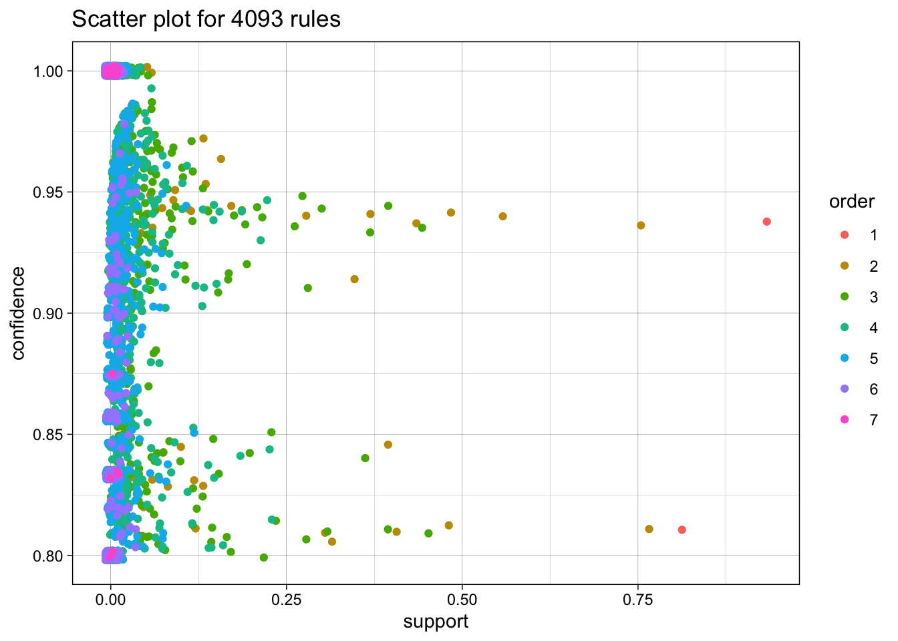
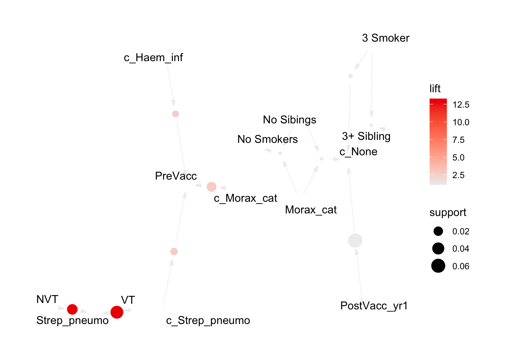
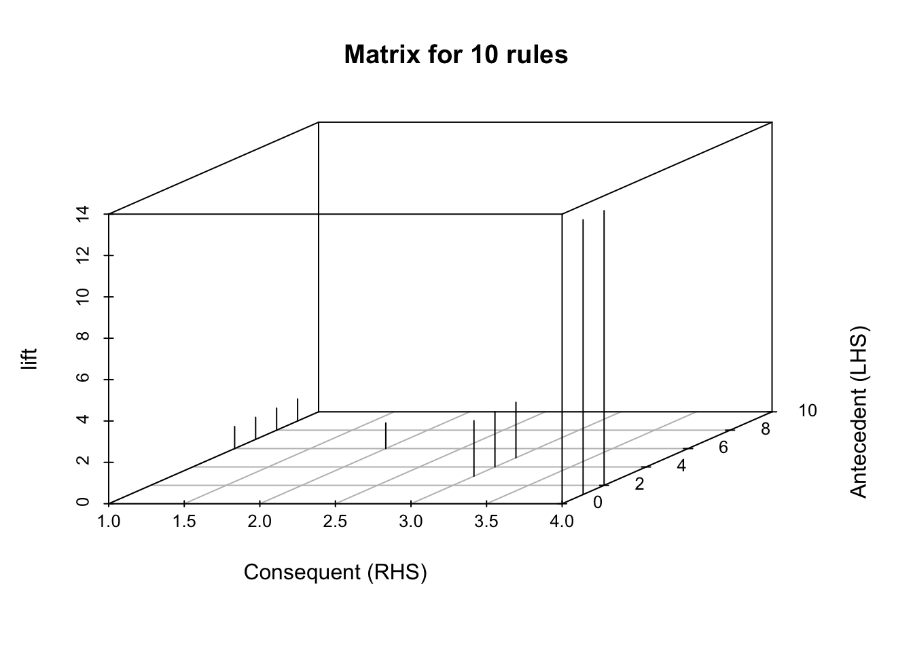
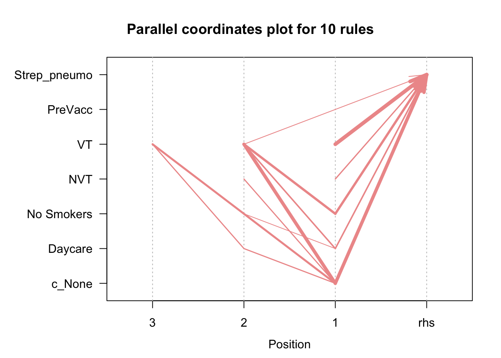

# NOTE: you might need to specify the source for the arules package:
# install.packages("arules", repos='http://cran.rstudio.com/')
suppressPackageStartupMessages({
library("tidyverse") # Collection of R packages for data science
library("knitr") # For dynamic report generation
library("ggplot2") # For creating static visualizations
library("lubridate") # For date and time manipulation
library("arules") # For mining association rules and frequent itemsets
library("arulesViz") # For visualizing association rules
library("plyr") # For data manipulation
library("RColorBrewer") # For color palettes
library("plotly") # For creating interactive web-based graphs
library("httr") # For downloading files from URLs
})
# Function to select "Not In"
'%!in%' <- function(x,y)!('%in%'(x,y))Market Basket Analysis Walkthrough
Market Basket Analysis, aka affinity analysis aka association rules mining is an unsupervised machine learning technique which applies an algorithm (apriori algorithm) to identify association rules in datasets.
We’ll be applying this algorithm to identify associations in a dataset containing information about cases of perforative acute otitis media in children.
We’ll start with loading in our packages
And our dataset
# Read in the cleaned data directly from the instructor's GitHub.
url <- "https://raw.githubusercontent.com/ysph-dsde/bdsy-phm/refs/heads/main/Data/pAOM.csv"
pAOM <- read_csv(url)Rows: 2137 Columns: 10
── Column specification ────────────────────────────────────────────────────────
Delimiter: ","
chr (10): PtID, SmokeNum, PtDaycare, SibNum, Pre_Post_PCV13, PCV13_Serotype_...
ℹ Use `spec()` to retrieve the full column specification for this data.
ℹ Specify the column types or set `show_col_types = FALSE` to quiet this message.We have 2137 rows representing 2137 cases of pAOM. Each row contains information about PtID- study ID of patient SmokeNum- number of smokers in household PtDayCare- did patient attend daycare SibNum- number of siblings in household NumSibDaycare- number of siblings in daycare Pre_Post_PCV13- did the case occur before or after the child could have received PCV13? (PreVacc, PostVacc_yr1-5) PCV13_Serotype_AOM- of pneumococcal pAOM cases, were they from PCV13 serotypes? (VT,NVTs) OtoPathogen- Strep_pneumo,Strep_pyogenes,Haem_inf, Morax_cat, Staph_aur, OthBact, PresViral Carriage1- otopathogens (c_Strep_pneumo,c_Strep_pyogenes,c_Haem_inf, c_Morax_cat, c_Staph_aur, c_None)found in NP carriage Carriage2- additional otopathogens found in NP carriage Carriage3- additional otopathogens found in NP carriage
Before using our rule mining algorithm, we need to transform data from the data frame format into transactions
# Create a temporary file
temp_file <- tempfile()
# Download the data from GitHub and save it to the temporary file
GET(url, write_disk(temp_file, overwrite = TRUE))Response [https://raw.githubusercontent.com/ysph-dsde/bdsy-phm/refs/heads/main/Data/pAOM.csv]
Date: 2025-07-08 21:05
Status: 200
Content-Type: text/plain; charset=utf-8
Size: 144 kB
<ON DISK> /var/folders/9f/rwy2b8vj3m90x_s1fvx553cn5v3lr9/T//RtmpTfaVIF/file1199439dc2ad8# Read the transactions from the downloaded file
tr <- read.transactions(temp_file, format = 'basket', sep = ',')print('Description of the transactions')[1] "Description of the transactions"summary(tr)transactions as itemMatrix in sparse format with
2138 rows (elements/itemsets/transactions) and
2178 columns (items) and a density of 0.003250036
most frequent items:
c_None No Smokers Daycare OthBact 1 Sibling (Other)
2008 1732 1265 1082 997 8050
element (itemset/transaction) length distribution:
sizes
5 6 7 8 9 10
3 11 1947 170 6 1
Min. 1st Qu. Median Mean 3rd Qu. Max.
5.000 7.000 7.000 7.079 7.000 10.000
includes extended item information - examples:
labels
1 0101
2 0102
3 0103Let’s see what items occur most frequently:
itemFrequencyPlot(tr,topN=25,type="absolute",col=brewer.pal(8,'Pastel2'), main="pAOM rules")a relative frequency plot
itemFrequencyPlot(tr,topN=20,type="relative",col=brewer.pal(8,'Pastel2'),main="Relative frequency, pAOM")Create some rules
We use the Apriori algorithm from the arules package to look for itemsets and find support for rules
We pass supp=0.0001 and conf=0.8 to return all the rules have a support of at least 0.1% and confidence of at least 80%.
We sort the rules by decreasing confidence.
Here are the rules matching these criteria:
rules <- apriori(tr, parameter = list(supp=0.001, conf=0.8))Apriori
Parameter specification:
confidence minval smax arem aval originalSupport maxtime support minlen
0.8 0.1 1 none FALSE TRUE 5 0.001 1
maxlen target ext
10 rules TRUE
Algorithmic control:
filter tree heap memopt load sort verbose
0.1 TRUE TRUE FALSE TRUE 2 TRUE
Absolute minimum support count: 2
set item appearances ...[0 item(s)] done [0.00s].
set transactions ...[2178 item(s), 2138 transaction(s)] done [0.00s].
sorting and recoding items ... [31 item(s)] done [0.00s].
creating transaction tree ... done [0.00s].
checking subsets of size 1 2 3 4 5 6 7 done [0.00s].
writing ... [4093 rule(s)] done [0.00s].
creating S4 object ... done [0.00s].rules <- sort(rules, by='confidence', decreasing = TRUE)
summary(rules)set of 4093 rules
rule length distribution (lhs + rhs):sizes
1 2 3 4 5 6 7
2 50 433 1366 1576 621 45
Min. 1st Qu. Median Mean 3rd Qu. Max.
1.00 4.00 5.00 4.59 5.00 7.00
summary of quality measures:
support confidence coverage lift
Min. :0.001403 Min. :0.8000 Min. :0.001403 Min. : 0.8518
1st Qu.:0.001871 1st Qu.:0.8913 1st Qu.:0.001871 1st Qu.: 1.0287
Median :0.003274 Median :1.0000 Median :0.003274 Median : 1.0647
Mean :0.013357 Mean :0.9468 Mean :0.014793 Mean : 3.3443
3rd Qu.:0.008887 3rd Qu.:1.0000 3rd Qu.:0.009354 3rd Qu.: 1.4648
Max. :0.939195 Max. :1.0000 Max. :1.000000 Max. :106.9000
count
Min. : 3.00
1st Qu.: 4.00
Median : 7.00
Mean : 28.56
3rd Qu.: 19.00
Max. :2008.00
mining info:
data ntransactions support confidence
tr 2138 0.001 0.8
call
apriori(data = tr, parameter = list(supp = 0.001, conf = 0.8))We have 4093 rules, most are 4 or 5 items long. Let’s inspect the top 10 rules according to these parameters (supp 0.001, conf =0.8).
inspect(rules[1:10]) lhs rhs support confidence
[1] {3 Smoker} => {c_None} 0.001870907 1
[2] {c_Haem_inf} => {PreVacc} 0.007015903 1
[3] {c_Strep_pneumo} => {PreVacc} 0.009354537 1
[4] {c_Morax_cat} => {PreVacc} 0.022450889 1
[5] {NVT} => {Strep_pneumo} 0.027595884 1
[6] {VT} => {Strep_pneumo} 0.047708138 1
[7] {PostVacc_yr1} => {c_None} 0.062675398 1
[8] {3 Smoker, 3+ Sibling} => {c_None} 0.001403181 1
[9] {Morax_cat, No Sibings} => {No Smokers} 0.001403181 1
[10] {Morax_cat, No Sibings} => {c_None} 0.001403181 1
coverage lift count
[1] 0.001870907 1.064741 4
[2] 0.007015903 2.679198 15
[3] 0.009354537 2.679198 20
[4] 0.022450889 2.679198 48
[5] 0.027595884 13.279503 59
[6] 0.047708138 13.279503 102
[7] 0.062675398 1.064741 134
[8] 0.001403181 1.064741 3
[9] 0.001403181 1.234411 3
[10] 0.001403181 1.064741 3 And plot these top 10 rules, or 20, or 50.
topRules <- rules[1:10]
plot(rules)To reduce overplotting, jitter is added! Use jitter = 0 to prevent jitter.
now with more colors
plot(rules, method = "two-key plot")To reduce overplotting, jitter is added! Use jitter = 0 to prevent jitter.
now how about a network graph?
plot(topRules, method="graph")
Now let’s see an interactive map:
plot(topRules, method="graph", engine = 'interactive')plot(topRules, method = "grouped")plot(topRules, method = "graph", engine = "htmlwidget")now a matrix plot
plot(topRules, method = "matrix", engine = "3d", measure = "lift")Itemsets in Antecedent (LHS)
[1] "{NVT}" "{VT}" "{c_Haem_inf}"
[4] "{c_Strep_pneumo}" "{c_Morax_cat}" "{Morax_cat,No Sibings}"
[7] "{3 Smoker}" "{PostVacc_yr1}" "{3 Smoker,3+ Sibling}"
Itemsets in Consequent (RHS)
[1] "{c_None}" "{No Smokers}" "{PreVacc}" "{Strep_pneumo}"
moving back a bit, let’s check a different set of rules:
rules_b <- apriori(tr, parameter = list(supp=0.01, conf=1.0))Apriori
Parameter specification:
confidence minval smax arem aval originalSupport maxtime support minlen
1 0.1 1 none FALSE TRUE 5 0.01 1
maxlen target ext
10 rules TRUE
Algorithmic control:
filter tree heap memopt load sort verbose
0.1 TRUE TRUE FALSE TRUE 2 TRUE
Absolute minimum support count: 21
set item appearances ...[0 item(s)] done [0.00s].
set transactions ...[2178 item(s), 2138 transaction(s)] done [0.00s].
sorting and recoding items ... [26 item(s)] done [0.00s].
creating transaction tree ... done [0.00s].
checking subsets of size 1 2 3 4 5 6 done [0.00s].
writing ... [115 rule(s)] done [0.00s].
creating S4 object ... done [0.00s].rules_b <- sort(rules_b, by='confidence', decreasing = TRUE)
summary(rules_b)set of 115 rules
rule length distribution (lhs + rhs):sizes
2 3 4 5 6
4 30 51 26 4
Min. 1st Qu. Median Mean 3rd Qu. Max.
2.000 3.000 4.000 3.965 5.000 6.000
summary of quality measures:
support confidence coverage lift
Min. :0.01029 Min. :1 Min. :0.01029 Min. : 1.065
1st Qu.:0.01169 1st Qu.:1 1st Qu.:0.01169 1st Qu.: 1.065
Median :0.01403 Median :1 Median :0.01403 Median : 1.065
Mean :0.01759 Mean :1 Mean :0.01759 Mean : 6.355
3rd Qu.:0.02035 3rd Qu.:1 3rd Qu.:0.02035 3rd Qu.:13.280
Max. :0.06268 Max. :1 Max. :0.06268 Max. :13.280
count
Min. : 22.00
1st Qu.: 25.00
Median : 30.00
Mean : 37.61
3rd Qu.: 43.50
Max. :134.00
mining info:
data ntransactions support confidence
tr 2138 0.01 1
call
apriori(data = tr, parameter = list(supp = 0.01, conf = 1))these more stringent criteria mean that we’re down to 115 rules to sort through.
inspect(rules_b[1:10]) lhs rhs support confidence
[1] {c_Morax_cat} => {PreVacc} 0.02245089 1
[2] {NVT} => {Strep_pneumo} 0.02759588 1
[3] {VT} => {Strep_pneumo} 0.04770814 1
[4] {PostVacc_yr1} => {c_None} 0.06267540 1
[5] {c_Morax_cat, No Daycare} => {PreVacc} 0.01169317 1
[6] {c_Morax_cat, OthBact} => {PreVacc} 0.01216090 1
[7] {c_Morax_cat, Daycare} => {PreVacc} 0.01028999 1
[8] {c_Morax_cat, No Smokers} => {PreVacc} 0.01917680 1
[9] {NVT, PreVacc} => {Strep_pneumo} 0.01075772 1
[10] {No Daycare, NVT} => {Strep_pneumo} 0.01169317 1
coverage lift count
[1] 0.02245089 2.679198 48
[2] 0.02759588 13.279503 59
[3] 0.04770814 13.279503 102
[4] 0.06267540 1.064741 134
[5] 0.01169317 2.679198 25
[6] 0.01216090 2.679198 26
[7] 0.01028999 2.679198 22
[8] 0.01917680 2.679198 41
[9] 0.01075772 13.279503 23
[10] 0.01169317 13.279503 25 try to look for only for rules associated with Strep_pneumo
pneumo.rules<-sort(subset(rules_b, subset = rhs %in% "Strep_pneumo"))
inspect(pneumo.rules[1:10]) lhs rhs support confidence
[1] {VT} => {Strep_pneumo} 0.04770814 1
[2] {c_None, VT} => {Strep_pneumo} 0.04443405 1
[3] {No Smokers, VT} => {Strep_pneumo} 0.03648269 1
[4] {c_None, No Smokers, VT} => {Strep_pneumo} 0.03367633 1
[5] {Daycare, VT} => {Strep_pneumo} 0.02946679 1
[6] {NVT} => {Strep_pneumo} 0.02759588 1
[7] {c_None, NVT} => {Strep_pneumo} 0.02666043 1
[8] {c_None, Daycare, VT} => {Strep_pneumo} 0.02666043 1
[9] {PreVacc, VT} => {Strep_pneumo} 0.02385407 1
[10] {Daycare, No Smokers, VT} => {Strep_pneumo} 0.02338634 1
coverage lift count
[1] 0.04770814 13.2795 102
[2] 0.04443405 13.2795 95
[3] 0.03648269 13.2795 78
[4] 0.03367633 13.2795 72
[5] 0.02946679 13.2795 63
[6] 0.02759588 13.2795 59
[7] 0.02666043 13.2795 57
[8] 0.02666043 13.2795 57
[9] 0.02385407 13.2795 51
[10] 0.02338634 13.2795 50 now let’s plot the pneumo rules:
plot(pneumo.rules, measure = c("support", "confidence"), shading = "lift")To reduce overplotting, jitter is added! Use jitter = 0 to prevent jitter.plot(pneumo.rules[1:10], method="graph", engine = 'interactive')
plot(pneumo.rules[1:10], method= "paracoord", control=list(reorder=TRUE))
reference: R and Data Mining there are other cool market basket analysis visualizations here: